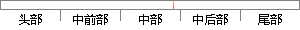

图3-9 内存控制块和内存分区的关系
片段位置图

相似结果
相似片段：内存内存块1 内存块2 内存分区 内存块3 ……… 内存块n 图6-1 内存控制块与内存分区和内存块的关系1-没有控制块时的分区 只有当把内存控制块与分区关联起来...
| 标题 | 《第6章 内存的动态分配_百度文库》 |
| 对比库 | PaperRater云论文库 |
| 网址 | http://wenku.baidu.com/link?url=4eje4zVl-BsQ6baZ9Xo26JpCweaoP5BFpLQVLVHfTyadNqSr9ozbZ8ZqKfKnD2eIDcZI0eu-KNSiQu5sKY7S1lvb64GjvdtO_vyUROJkaOy |
| 相似率 | 76.92% （轻度抄袭） |
※ 片段修改建议 ※
近似词参考：- 控制：节制
- 关系：干系 瓜葛
系统自动生成语句：图3-9 内存节制块和内存分区的干系
注：本片段修改建议为系统自动生成，仅供参考。